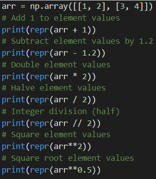

One of the main purposes of NumPy is to perform multi-dimensional arithmetic. Using NumPy arrays, we can apply arithmetic to each element with a single operation.
The code below shows multi-dimensional arithmetic with NumPy.

Using NumPy arithmetic, we can easily modify large amounts of numeric data with only a few operations. For example, we could convert a dataset of Fahrenheit temperatures to their equivalent Celsius form.
The code below converts Fahrenheit to Celsius in NumPy.
It is important to note that performing arithmetic on NumPy arrays does not change the original array, and instead produces a new array that is the result of the arithmatic operation.
Non-linear functions
Apart from basic arithmetic operations, NumPy also allows you to use non-linear functions such as exponentials and logarithms.
The function
np.exeperforms a base e exponential on an array, while the function np.exe2performs a base 2 exponential.Likewise, np.log, np.log2, np.log10all perform logarithms on an input array,using base e, base 2, and base 10, respectively.
The code below shows various exponentials and logarithms with NumPy. Note that np.eandnp.pirepresent the mathematical constants e and π
, respectively
To do a regular power operation with any base, we use
np.power
The first argument to the function is the base, while the second is the power. If the base or power is an array rather than a single number, the operation is applied to every element in the array.
Matrix Multiplication
Since NumPy arrays are basically vectors and matrices, it makes sense that there are functions for dot products and matrix multiplication. Specifically, the main function to use is
np.matmul
which takes two vector/matrix arrays as input and produces a dot product or matrix multiplication.
The code below shows various examples of matrix multiplication. When both inputs are 1-D, the output is the dot product.
Note that the dimensions of the two input matrices must be valid for a matrix multiplication. Specifically, the second dimension of the first matrix must equal the first dimension of the second matrix, otherwise np.matmulwill result inValueError